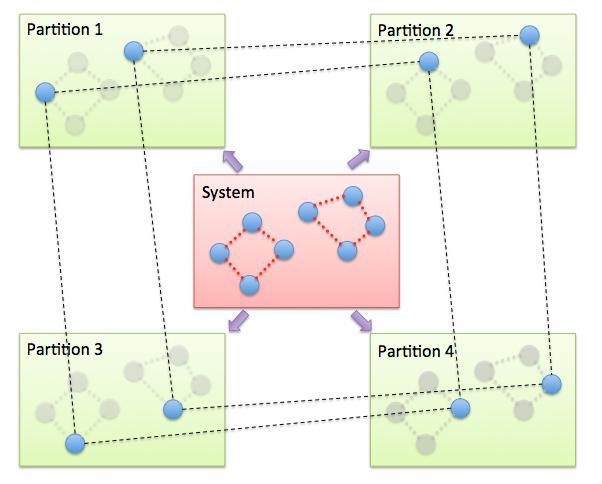

\(\renewcommand{\AA}{\text{Å}}\)
fix pimd/langevin command
fix pimd/nvt command
fix pimd/langevin/bosonic command
fix pimd/nvt/bosonic command
Syntax
fix ID group-ID style keyword value ...
ID, group-ID are documented in fix command
style = pimd/langevin or pimd/nvt or pimd/langevin/bosonic or pimd/nvt/bosonic = style name of this fix command
zero or more keyword/value pairs may be appended
keywords for style pimd/nvt
keywords = method or fmass or sp or temp or nhc method value = pimd or nmpimd or cmd fmass value = scaling factor on mass sp value = scaling factor on Planck constant temp value = temperature (temperature units) nhc value = Nc = number of chains in Nose-Hoover thermostat
keywords for style pimd/langevin
keywords = method or integrator or ensemble or fmmode or fmass or scale or sp or temp or thermostat or tau or iso or aniso or barostat or taup or fixcom or esynch method value = nmpimd (default) or pimd integrator value = obabo or baoab ensemble value = nvt or nve or nph or npt fmmode value = physical or normal fmass value = scaling factor on mass sp value = scaling factor on Planck constant temp value = temperature (temperature unit) temperature = target temperature of the thermostat thermostat values = style seed style value = PILE_L seed = random number generator seed tau value = thermostat damping parameter (time unit) scale value = scaling factor of the damping times of non-centroid modes of PILE_L thermostat iso or aniso values = pressure (pressure unit) pressure = scalar external pressure of the barostat barostat value = BZP or MTTK taup value = barostat damping parameter (time unit) fixcom value = yes or no esynch value = yes or no (only in pimd/langevin/bosonic)
Examples
fix 1 all pimd/nvt method nmpimd fmass 1.0 sp 2.0 temp 300.0 nhc 4
fix 1 all pimd/langevin ensemble npt integrator obabo temp 113.15 thermostat PILE_L 1234 tau 1.0 iso 1.0 barostat BZP taup 1.0
fix 1 all pimd/nvt/bosonic method pimd fmass 1.0 sp 1.0 temp 2.0 nhc 4
fix 1 all pimd/langevin/bosonic integrator obabo temp 113.15 thermostat PILE_L 1234 tau 1.0
Example input files are provided in the examples/PACKAGES/pimd and examples/PACKAGES/pimd_bosonic directories.
Description
Changed in version 28Mar2023.
Fix pimd was renamed to fix pimd/nvt and fix pimd/langevin was added.
These fix commands perform quantum molecular dynamics simulations based on the Feynman path-integral to include effects of tunneling and zero-point motion. In this formalism, the isomorphism of a quantum partition function for the original system to a classical partition function for a ring-polymer system is exploited, to efficiently sample configurations from the canonical ensemble (Feynman).
Added in version 2Apr2025: Fix pimd/langevin/bosonic and pimd/nvt/bosonic were added.
Fix pimd/nvt and fix pimd/langevin simulate distinguishable quantum particles. Simulations of bosons, including exchange effects, are supported with the fix pimd/langevin/bosonic and the pimd/nvt/bosonic commands.
For distinguishable particles, the isomorphic classical partition function and its components are given by the following equations:
\(M_i\) is the fictitious mass of the \(i\)-th mode, and m is the actual mass of the atoms.
The interested user is referred to any of the numerous references on this methodology, but briefly, each quantum particle in a path integral simulation is represented by a ring-polymer of P quasi-beads, labeled from 1 to P. During the simulation, each quasi-bead interacts with beads on the other ring-polymers with the same imaginary time index (the second term in the effective potential above). The quasi-beads also interact with the two neighboring quasi-beads through the spring potential in imaginary-time space (first term in effective potential).
For bosons, the method of Hirshberg et. al. (Hirshberg1) is employed, which replaces the spring part of \(V_{eff}\) by the spring potential \(V^{[1,N]}\) defined through recurrence relation:
Here, \(E^{[N-K+1,N]}\) is the spring energy of the ring polymer obtained by connecting the beads of particles \(N - k + 1, N - k + 2, ..., N\) in a cycle. The implementation of the potential and forces evaluation uses the algorithm developed by Feldman and Hirshberg, which scales like \(N^2+PN\) (Feldman). The minimum-image convention is employed on the springs to account for periodic boundary conditions; an elaborate discussion of the validity of the approximation is available in (Higer).
To sample the canonical ensemble, any thermostat can be applied.
Fix pimd/nvt applies a Nose-Hoover massive chain thermostat (Tuckerman). With the massive chain algorithm, a chain of NH thermostats is coupled to each degree of freedom for each quasi-bead. The keyword temp sets the target temperature for the system and the keyword nhc sets the number Nc of thermostats in each chain. For example, for a simulation of N particles with P beads in each ring-polymer, the total number of NH thermostats would be 3 x N x P x Nc.
Fix pimd/langevin implements a Langevin thermostat in the normal mode representation, and also provides a barostat to sample the NPH/NPT ensembles.
Note
Both these fix styles implement a complete velocity-verlet integrator combined with a thermostat, so no other time integration fix should be used.
The method keyword determines what style of PIMD is performed. A value of pimd is standard PIMD. A value of nmpimd is for normal-mode PIMD. A value of cmd is for centroid molecular dynamics (CMD). The difference between the styles is as follows.
In standard PIMD, the value used for a bead’s fictitious mass is arbitrary. A common choice is to use \(M_i = m/P\), which results in the mass of the entire ring-polymer being equal to the real quantum particle. But it can be difficult to efficiently integrate the equations of motion for the stiff harmonic interactions in the ring polymers.
A useful way to resolve this issue is to integrate the equations of motion in a normal mode representation, using Normal Mode Path-Integral Molecular Dynamics (NMPIMD) (Cao1). In NMPIMD, the NH chains are attached to each normal mode of the ring-polymer and the fictitious mass of each mode is chosen as Mk = the eigenvalue of the Kth normal mode for k > 0. The k = 0 mode, referred to as the zero-frequency mode or centroid, corresponds to overall translation of the ring-polymer and is assigned the mass of the real particle.
Note
Motion of the centroid can be effectively uncoupled from the other normal modes by scaling the fictitious masses to achieve a partial adiabatic separation. This is called a Centroid Molecular Dynamics (CMD) approximation (Cao2). The time-evolution (and resulting dynamics) of the quantum particles can be used to obtain centroid time correlation functions, which can be further used to obtain the true quantum correlation function for the original system. The CMD method also uses normal modes to evolve the system, except only the k > 0 modes are thermostatted, not the centroid degrees of freedom.
Added in version 21Nov2023: Mode pimd added to fix pimd/langevin.
Fix pimd/langevin supports the method values nmpimd and pimd. The default value is nmpimd. If method is nmpimd, the normal mode representation is used to integrate the equations of motion. The exact solution of harmonic oscillator is used to propagate the free ring polymer part of the Hamiltonian. If method is pimd, the Cartesian representation is used to integrate the equations of motion. The harmonic force is added to the total force of the system, and the numerical integrator is used to propagate the Hamiltonian.
Fix pimd/nvt/bosonic only supports the pimd and nmpimd methods. Fix pimd/langevin/bosonic only supports the pimd method, which is the default in this fix. These restrictions are related to the use of normal modes, which change in bosons.
The keyword integrator specifies the Trotter splitting method used by fix pimd/langevin. See (Liu) for a discussion on the OBABO and BAOAB splitting schemes. Typically either of the two should work fine.
The keyword fmass sets a further scaling factor for the fictitious masses of beads, which can be used for the Partial Adiabatic CMD (Hone), or to be set as P, which results in the fictitious masses to be equal to the real particle masses.
The keyword fmmode of fix pimd/langevin determines the mode of fictitious mass preconditioning. There are two options: physical and normal. If fmmode is physical, then the physical mass of the particles are used (and then multiplied by fmass). If fmmode is normal, then the physical mass is first multiplied by the eigenvalue of each normal mode, and then multiplied by fmass. More precisely, the fictitious mass of fix pimd/langevin is determined by two factors: fmmode and fmass. If fmmode is physical, then the fictitious mass is
If fmmode is normal, then the fictitious mass is
where \(\lambda_i\) is the eigenvalue of the \(i\)-th normal mode.
In pimd/langevin/bosonic, fmmode should not be used, and would raise an error if set to a value other than physical, due to the lack of support for bosonic normal modes.
Note
Fictitious mass is only used in the momentum of the equation of motion (\(\mathbf{p}_i=M_i\mathbf{v}_i\)), and not used in the spring elastic energy (\(\sum_{i=1}^P \frac{1}{2}m\omega_P^2(q_i - q_{i+1})^2\), \(m\) is always the actual mass of the particles).
Changed in version 10Dec2025: sp keyword added to fix pimd/langevin
The keyword sp is a scaling factor on Planck’s constant. Scaling the Planck’s constant means modifying the “quantumness” of the PIMD simulation. Using the physical value of Planck’s constant corresponds to a fully quantum simulation, and 0 corresponds to the classical limit. For unit styles other than lj, the default value of 1.0 is appropriate for most situations. For lj units, a fully quantum simulation translates into setting sp to the de Boer quantumness parameter \(\Lambda^{\ast}\) (see de Boer):
where \(h\) is Planck’s constant, \(\sigma\) is the length scale, \(\epsilon\) is the energy scale, and \(m\) is the mass of the particles. For example, for Neon, \(m = 20.1797\) Dalton, \(\varepsilon = 3.0747 \times 10^{-3}\) eV and \(\sigma = 2.7616 \AA\). Then we have
Thus for a fully quantum simulation of Neon using lj units, sp should be set to 0.600. The modification of the quantumness should be done by scaling \(\Lambda^{\ast}\).
The keyword ensemble for fix style pimd/langevin determines which ensemble is it going to sample. The value can be nve (microcanonical), nvt (canonical), nph (isoenthalpic), and npt (isothermal-isobaric). Fix pimd/langevin/bosonic currently does not support ensemble other than nve, nvt.
The keyword temp specifies temperature parameter for fix styles pimd/nvt and pimd/langevin. It should read a positive floating-point number.
Note
For pimd simulations, a temperature values should be specified even for nve ensemble. Temperature will make a difference for nve pimd, since the spring elastic frequency between the beads will be affected by the temperature.
The keyword thermostat reads style and seed of thermostat for fix style pimd/langevin. style can only be PILE_L (path integral Langevin equation local thermostat, as described in Ceriotti), and seed should a positive integer number, which serves as the seed of the pseudo random number generator.
Note
The fix style pimd/langevin uses the stochastic PILE_L thermostat to control temperature. This thermostat works on the normal modes of the ring polymer. The tau parameter controls the centroid mode, and the scale parameter controls the non-centroid modes.
The keyword tau specifies the thermostat damping time parameter for fix style pimd/langevin. It is in time unit. It only works on the centroid mode.
The keyword scale specifies a scaling parameter for the damping times of the non-centroid modes for fix style pimd/langevin. The default damping time of the non-centroid mode \(i\) is \(\frac{P}{\beta\hbar}\sqrt{\lambda_i\times\mathrm{fmass}}\) (fmmode is physical) or \(\frac{P}{\beta\hbar}\sqrt{\mathrm{fmass}}\) (fmmode is normal). The damping times of all non-centroid modes are the default values divided by scale. This keyword should be used only with method*=*nmpimd.
The barostat parameters for fix style pimd/langevin with npt or nph ensemble is specified using one of iso and aniso keywords. A pressure value should be given with pressure unit. The keyword iso means couple all 3 diagonal components together when pressure is computed (hydrostatic pressure), and dilate/contract the dimensions together. The keyword aniso means x, y, and z dimensions are controlled independently using the Pxx, Pyy, and Pzz components of the stress tensor as the driving forces, and the specified scalar external pressure. These parameters are not supported in pimd/langevin/bosonic.
The keyword barostat reads style of barostat for fix style pimd/langevin. style can be BZP (Bussi-Zykova-Parrinello, as described in Bussi) or MTTK (Martyna-Tuckerman-Tobias-Klein, as described in Martyna1 and Martyna2).
The keyword taup specifies the barostat damping time parameter for fix style pimd/langevin. It is in time unit. It is not supported in pimd/langevin/bosonic.
The keyword fixcom specifies whether the center-of-mass of the extended ring-polymer system is fixed during the pimd simulation. Once fixcom is set to be yes, the center-of-mass velocity will be distracted from the centroid-mode velocities in each step.
Fix pimd/langevin/bosonic also has a keyword not available in fix pimd/langevin: esynch, with default yes. If set to no, some time consuming synchronization of spring energies and the primitive kinetic energy estimator between processors is avoided.
The PIMD algorithm in LAMMPS is implemented as a hyper-parallel scheme as described in Calhoun. In LAMMPS this is done by using multi-replica feature in LAMMPS, where each quasi-particle system is stored and simulated on a separate partition of processors. The following diagram illustrates this approach. The original system with 2 ring polymers is shown in red. Since each ring has 4 quasi-beads (imaginary time slices), there are 4 replicas of the system, each running on one of the 4 partitions of processors. Each replica (shown in green) owns one quasi-bead in each ring.

To run a PIMD simulation with M quasi-beads in each ring polymer using N MPI tasks for each partition’s domain-decomposition, you would use P = MxN processors (cores) and run the simulation as follows:
mpirun -np P lmp_mpi -partition MxN -in script
Note that in the LAMMPS input script for a multi-partition simulation, it is often very useful to define a uloop-style variable such as
variable ibead uloop M pad
where M is the number of quasi-beads (partitions) used in the calculation. The uloop variable can then be used to manage I/O related tasks for each of the partitions, e.g.
dump dcd all dcd 10 system_${ibead}.dcd
dump 1 all custom 100 ${ibead}.xyz id type x y z vx vy vz ix iy iz fx fy fz
restart 1000 system_${ibead}.restart1 system_${ibead}.restart2
read_restart system_${ibead}.restart2
Note
Fix pimd/langevin dumps the Cartesian coordinates, but dumps the velocities and forces in the normal mode representation. If the Cartesian velocities and forces are needed, it is easy to perform the transformation when doing post-processing.
It is recommended to dump the image flags (ix iy iz) for fix pimd/langevin. It will be useful if you want to calculate some estimators during post-processing.
Major differences of fix pimd/nvt and fix pimd/langevin are:
Fix pimd/nvt includes Cartesian pimd, normal mode pimd, and centroid md. Fix pimd/langevin only intends to support normal mode pimd, as it is commonly enough for thermodynamic sampling.
Fix pimd/nvt uses Nose-Hoover chain thermostat. Fix pimd/langevin uses Langevin thermostat.
Fix pimd/langevin provides barostat, so the npt ensemble can be sampled. Fix pimd/nvt only support nvt ensemble.
Fix pimd/langevin provides several quantum estimators in output.
Fix pimd/langevin allows multiple processes for each bead. For fix pimd/nvt, there is a large chance that multi-process tasks for each bead may fail.
The dump of fix pimd/nvt are all Cartesian. Fix pimd/langevin dumps normal-mode velocities and forces, and Cartesian coordinates.
Initially, the inter-replica communication and normal mode transformation parts of fix pimd/langevin are written based on those of fix pimd/nvt, but are significantly revised.
Restart, fix_modify, output, run start/stop, minimize info
Fix pimd/nvt writes the state of the Nose/Hoover thermostat over all quasi-beads to binary restart files. See the read_restart command for info on how to re-specify a fix in an input script that reads a restart file, so that the operation of the fix continues in an uninterrupted fashion.
Fix pimd/langevin writes the state of the barostat overall beads to binary restart files. Since it uses a stochastic thermostat, the state of the thermostat is not written. However, the state of the system can be restored by reading the restart file, except that it will re-initialize the random number generator.
None of the fix_modify options are relevant to fix pimd/nvt.
Fix pimd/nvt computes a global 3-vector, which can be accessed by various output commands. The three quantities in the global vector are:
the total spring energy of the quasi-beads,
the current temperature of the classical system of ring polymers,
the current value of the scalar virial estimator for the kinetic energy of the quantum system (Herman).
The vector values calculated by fix pimd/nvt are “extensive”, except for the temperature, which is “intensive”.
Fix pimd/nvt/bosonic computes a global 4-vector. The first three are the same as in pimd/nvt (the justification for the correctness of the virial estimator for bosons appears in the supporting information of (Hirshberg2)). The fourth is the current value of the scalar primitive estimator for the kinetic energy of the quantum system (Hirshberg1).
Fix pimd/langevin computes a global vector of quantities, which can be accessed by various output commands. Note that it outputs multiple log files, and different log files contain information about different beads or modes (see detailed explanations below). If ensemble is nve or nvt, the vector has 10 values:
kinetic energy of the bead (if method*=*pimd) or normal mode (if method*=*nmpimd)
spring elastic energy of the bead (if method*=*pimd) or normal mode (if method*=*nmpimd)
potential energy of the bead
total energy of all beads (conserved if ensemble is nve)
primitive kinetic energy estimator
virial energy estimator
centroid-virial energy estimator
primitive pressure estimator
thermodynamic pressure estimator
centroid-virial pressure estimator
The first 3 are different for different log files, and the others are the same for different log files.
If ensemble is nph or npt, the vector stores internal variables of the barostat. If iso is used, the vector has 15 values:
kinetic energy of the normal mode
spring elastic energy of the normal mode
potential energy of the bead
total energy of all beads (conserved if ensemble is nve)
primitive kinetic energy estimator
virial energy estimator
centroid-virial energy estimator
primitive pressure estimator
thermodynamic pressure estimator
centroid-virial pressure estimator
barostat velocity
barostat kinetic energy
barostat potential energy
barostat cell Jacobian
enthalpy of the extended system (sum of 4, 12, 13, and 14; conserved if ensemble is nph)
If aniso or x or y or z is used for the barostat, the vector has 17 values:
kinetic energy of the normal mode
spring elastic energy of the normal mode
potential energy of the bead
total energy of all beads (conserved if ensemble is nve)
primitive kinetic energy estimator
virial energy estimator
centroid-virial energy estimator
primitive pressure estimator
thermodynamic pressure estimator
centroid-virial pressure estimator
x component of barostat velocity
y component of barostat velocity
z component of barostat velocity
barostat kinetic energy
barostat potential energy
barostat cell Jacobian
enthalpy of the extended system (sum of 4, 14, 15, and 16; conserved if ensemble is nph)
Fix pimd/langevin/bosonic computes a global 6-vector. The quantities in the global vector are:
kinetic energy of the beads,
spring elastic energy of the beads,
potential energy of the bead,
total energy of all beads (conserved if ensemble is nve) if esynch is yes
primitive kinetic energy estimator (Hirshberg1)
virial energy estimator (Herman) (see the justification in the supporting information of (Hirshberg2)).
The first three are different for different log files, and the others are the same for different log files, except for the primitive kinetic energy estimator when setting esynch to no. Then, the primitive kinetic energy estimator is obtained by summing over all log files. Also note that when esynch is set to no, the fourth output gives the total energy of all beads excluding the spring elastic energy; the total classical energy can then be obtained by adding the sum of second output over all log files. All vector values calculated by fix pimd/langevin/bosonic are “extensive”.
For both pimd/nvt/bosonic and pimd/langevin/bosonic, the contribution of the exterior spring to the primitive estimator is printed to the first log file. The contribution of the \(P-1\) interior springs is printed to the other \(P-1\) log files. The contribution of the constant \(\frac{PdN}{2 \beta}\) (with \(d\) being the dimensionality) is equally divided over log files.
No parameter of fix pimd/nvt or pimd/langevin can be used with the start/stop keywords of the run command. Fix pimd/nvt or pimd/langevin is not invoked during energy minimization.
Restrictions
These fixes are part of the REPLICA package. They are only enabled if LAMMPS was built with that package. See the Build package page for more info.
Fix pimd/nvt cannot be used with lj units. Fix pimd/langevin can be used with lj units. See the documentation above for how to use it.
Only some combinations of fix styles and their options support partitions with multiple processors. LAMMPS will stop with an error if multi-processor partitions are not supported.
A PIMD simulation can be initialized with a single data file read via the read_data command. However, this means all quasi-beads in a ring polymer will have identical positions and velocities, resulting in identical trajectories for all quasi-beads. To avoid this, users can simply initialize velocities with different random number seeds assigned to each partition, as defined by the uloop variable, e.g.
velocity all create 300.0 1234${ibead} rot yes dist gaussian
Default
The keyword defaults for fix pimd/nvt are method = pimd, fmass = 1.0, sp = 1.0, temp = 300.0, and nhc = 2.
The keyword defaults for fix pimd/langevin are integrator = obabo, method = nmpimd, ensemble = nvt, fmmode = physical, fmass = 1.0, scale = 1, temp = 298.15, thermostat = PILE_L, tau = 1.0, iso = 1.0, taup = 1.0, barostat = BZP, fixcom = yes, and sp = 1.0 for all its arguments.
(Feynman) R. Feynman and A. Hibbs, Chapter 7, Quantum Mechanics and Path Integrals, McGraw-Hill, New York (1965).
(Tuckerman) M. Tuckerman and B. Berne, J Chem Phys, 99, 2796 (1993).
(Cao1) J. Cao and B. Berne, J Chem Phys, 99, 2902 (1993).
(Cao2) J. Cao and G. Voth, J Chem Phys, 100, 5093 (1994).
(de Boer) J. de Boer, “Quantum Effects and Exchange Effects on the Thermodynamic Properties of Liquid Helium,” Progress in Low Temperature Physics, Volume 2, Pages 1-58 (1957).
(Hone) T. Hone, P. Rossky, G. Voth, J Chem Phys, 124, 154103 (2006).
(Calhoun) A. Calhoun, M. Pavese, G. Voth, Chem Phys Letters, 262, 415 (1996).
(Herman) M. F. Herman, E. J. Bruskin, B. J. Berne, J Chem Phys, 76, 5150 (1982).
(Bussi) G. Bussi, T. Zykova-Timan, M. Parrinello, J Chem Phys, 130, 074101 (2009).
(Ceriotti) M. Ceriotti, M. Parrinello, T. Markland, D. Manolopoulos, J. Chem. Phys. 133, 124104 (2010).
(Martyna1) G. Martyna, D. Tobias, M. Klein, J. Chem. Phys. 101, 4177 (1994).
(Martyna2) G. Martyna, A. Hughes, M. Tuckerman, J. Chem. Phys. 110, 3275 (1999).
(Liu) J. Liu, D. Li, X. Liu, J. Chem. Phys. 145, 024103 (2016).
(Hirshberg1) B. Hirshberg, V. Rizzi, and M. Parrinello, “Path integral molecular dynamics for bosons,” Proc. Natl. Acad. Sci. U. S. A. 116, 21445 (2019)
(Hirshberg2) B. Hirshberg, M. Invernizzi, and M. Parrinello, “Path integral molecular dynamics for fermions: Alleviating the sign problem with the Bogoliubov inequality,” J Chem Phys, 152, 171102 (2020)
(Feldman) Y. M. Y. Feldman and B. Hirshberg, “Quadratic scaling bosonic path integral molecular dynamics,” J. Chem. Phys. 159, 154107 (2023)
(Higer) J. Higer, Y. M. Y. Feldman, and B. Hirshberg, “Periodic Boundary Conditions for Bosonic Path Integral Molecular Dynamics,” J. Chem. Phys. 163, 024101 (2025)